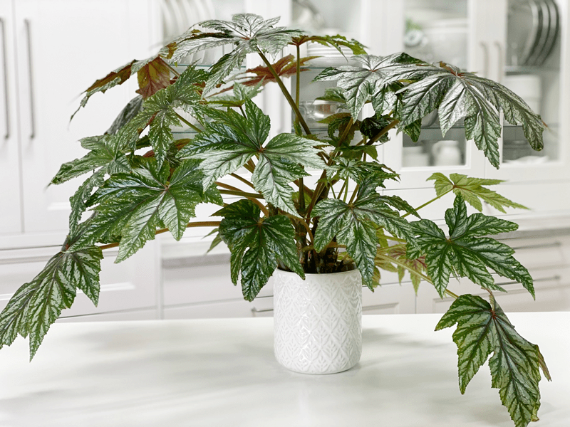
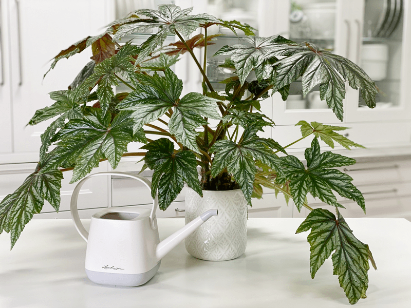

Begonia Gryphon | Care Difficulty – Easy
The Begonia ‘Gryphon’ plant is an upright, mounding, evergreen perennial noted for its eye-catching foliage and durability. It produces large, thick, glossy green, palmate leaves, adorned with a silver overlay. Both their undersides and slender stems are deep orange-red, adding pleasing contrast. They are pretty fast growers; growing 12 to 16 inches in height with a 16 to 18-inch spread. I can confirm this, as I have one in the center of our dining room table, and it’s slowly taking over.

Many people know begonias as an outdoor plant, but they are wonderful plants to grow indoors as well. Begonias can quickly get confusing. There are over 1,500 species and over 10,000 hybrids of begonia in existence today. I was lucky enough to get this one. I first spied it at the plant nursery here in town. Bob and I frequent there during the summers to enjoy a glass of iced tea while we walk through all the plants.
I spotted the uniqueness of this one but it “felt” intimidating, so I left it right where I saw it. The next day, Bob came home with a surprise for me… this plant! Oy-vey. I don’t know what it is about that scared me, but I surely thought that it was going to be a drama queen. Much to my delighted surprise, it is soooooo easy to care for. It’s kind of a lone wolf and doesn’t require any special attention, other than it starts to droop a tad when thirsty. It has done nothing but grow. Now that’s my kind of plant!
Light Requirements
This plant is not in favor of direct sun. This is because the leaves are sensitive to getting scorched. In their natural habitat, most begonias grow undercover. I find that mine does perfectly well in on my dining room table, which is near a north-facing window. The lighting is naturally diffused and the plant never receives direct light.
Water Requirements
From spring through fall you will need to water this plant often. Keep the soil slightly moist to the touch, but do not overwater. During winter, cut down watering and allow the topsoil to become dry to the touch before watering again. I will share that this plant can freak a person out, though.
I used to have it placed in another room, where I had a harder time keeping an eye on it. I missed a watering and all the stems bent over–I mean OVER! I thought for sure it was a goner. I quickly watered it and even put water in the bottom of the cover pot so the roots could really get a good drink. (if you do this, be sure to dump out any water that hasn’t been absorbed after 20 minutes.) Within a day, the stems sprang back up, and life was happy once again.

Temperature Requirements
Average room temperatures of 55 – 75 degrees (F) are best suited for Begonias…and no less than 55 degrees (F).
Fertilizer – Plant Food
I fertilize every 4 weeks during the growing season (spring-fall) with a 1/2-strength diluted complete fertilizer. They can be sensitive to chemicals, however, so I highly recommend using an organic plant fertilizer on them, rather than synthetic. If you overfeed, you can remove the houseplant from its current soil and repot it in fresh soil. This technique is undoubtedly the best way to get rid of the excess nutrients affecting your plant. Alternatively, you can flush the soil, which involves drenching the soil with water and letting it drain out. Repeat this several times to help the soil get rid of excess fertilizer.
Additional Care
- Remove any dead, discolored, damaged, or diseased leaves and stems as they occur with clean, sharp scissors. Snip stems just above a leaf node; new growth will emerge from this cut. I use the watering time to inspect my plants thoroughly.
- To clean the leaves, I take it into the shower and give it a good rinse.
- Bugs on the leaves are pretty rare. But if they do appear, it’s best to treat them by hand rather than spraying anything on your begonia. Dip a cotton swab in rubbing alcohol, and use it to kill and remove the bugs.
Plant Characteristics to Watch For
Diagnosing what is going wrong with your plant is going to take a little detective work, but even more patience! First of all, don’t panic, and don’t throw out a plant prematurely. Take a few deep breaths and work down the list of possible issues. Below, I am going to share some typical symptoms that can arise. When I start to spot troubling signs on a plant, I take the plant into a room with good lighting, pull out my magnifiers, and begin by thoroughly inspecting the plant.
The leaves are looking faded.
- If the leaves start to turn white, faded, or look like they’re burning, that means it’s getting too much sun.
- Solution: Move the plant to a shadier location.
The stems are getting leggy.
- If the stems start to grow leggy and reach for the window, then they’re not getting enough light.
- Solution: Move it closer to the window, or add a grow light.
Leaves turning brown.
- Most of the time, brown leaves means they aren’t getting the right amount of water (usually underwatering). But can also be caused by lack of humidity or extreme temperatures (freezing or sunburn).
- Solution: Ensure that the soil stays consistently moist, and run a humidifier next to them if the air is dry.
Leaves turning yellow.
- This is usually caused by overwatering, but in some cases could be due to a fungal disease or lack of light.
- Solution: Ensure that the soil is not wet or soggy. If you suspect disease, prune off the yellow leaves, give your begonia better air circulation (an oscillating fan works great indoors), and never water over the top of the leaves.
My plant is dropping stems and/or leaves.
- When a begonia starts dropping leaves and stems, it’s usually because of too much water (especially during the winter). But it could also be from exposure to cold, or moving the plant around too much.
- Solution: Check the soil to see if watering is the suspect. Otherwise, ask yourself, “Is the plant near a cold draft?” If so, move the plant.
Leaves turning white.
- White or faded leaves usually happen when they are getting too much direct sun.
- Solution: Move the plant to a location where it gets bright, indirect light inside.
The leaves are curling.
- This can be caused by a number of problems. First, check to make sure there aren’t any bugs on the leaves. Otherwise, it could be due to lack of humidity, improper watering, or too much sun or heat.
- Solution: Put on your detective hat, and start ruling away things as you work down the list.
Wilting or drooping leaves.
- Droopy leaves are usually caused by underwatering. But it could also happen after the plant has been repotted.
- Solution: Reassess the watering schedule and back down so you don’t overwater. Remember, each plant has its own watering schedule. If you just repotted the plant, give it some time and see if it bounces back.
Common Bugs to Watch For
If you want to have healthy houseplants, you MUST inspect them regularly. Every time I water a plant, I give it a quick look-over. Bugs/insects feeding on your plants reduces the plant sap and redirects nutrients from leaves. Some chew on the leaves, leaving holes in the leaves. Also watch for wilting or yellowing, distorted, or speckled leaves. They can quickly get out of hand and spread to your other plants.
IF you see ONE bug, trust me, there are more. So, take action right away. Some are brave enough to show their “faces” by hanging out on stems in plain sight. Others tend to hide out in the darnedest of places, like the crotch of a plant or in a leaf that has yet to unfurl.
-

-
Mealybugs
-

-
Scales
-

-
Aphids
-

-
Spider mites
- Mealybugs look like small balls of cotton. They can travel, slooooooowly, but they have a strong will and determination! Though they are slow-moving, if any plant is touching another, there is a chance the mealybug will hitch a ride on a new leaf and spread. They breed like rabbits of the insect world. Females can deposit around 600 eggs in loose cottony masses, often on the undersides of leaves or along stems.
- Scales are dark-colored bumps that are primarily immobile insects that stick themselves to stems and leaves. They are rather inconspicuous and don’t look like a typical insect. They can range in color but are most often brownish in appearance. They’re called “scales” primarily due to their scale-like appearance on a plant, due to waxy or armored coverings. They are often seen in clumps along a stem, sucking away at the plant’s juices with their spiky mouthpart.
- Aphids are more commonly seen if you place your plants outdoors. Aphids are indeed bugs. They are tiny insects that, along with black, also come in shades of yellow, green, brown, and pink. They are often found on the undersides of leaves.
- Spider mites are more common on houseplants. They are not insects – they are related to spiders. These appear to be tiny black or red moving dots. Spider mites are nearly invisible to the naked eye. You often need a magnifying lens to spot them, or you may just notice a reddish film across the bottom of the leaves, some webbing, or even some leaf damage, which usually results in reddish-brown spots on the leaf.
Toxicity
Begonias are toxic to pets, with the tubers being the most poisonous part. They are not toxic to humans, although may cause allergic reactions.
© AmieSue.com